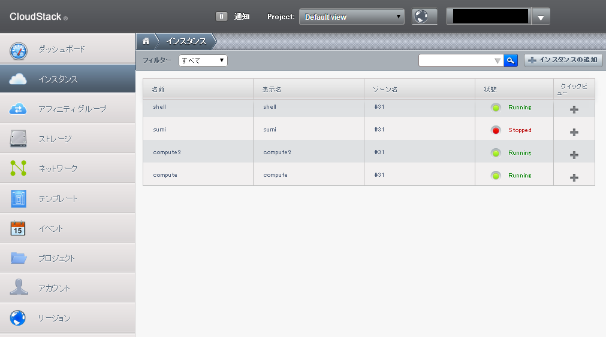
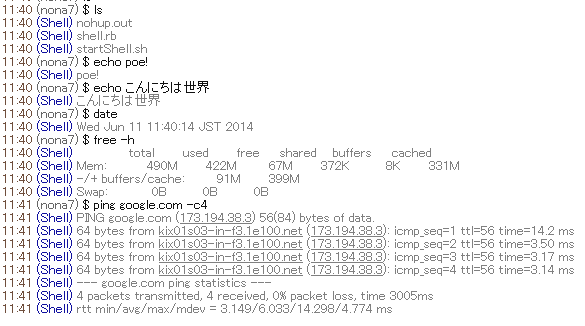

こうして私はVirtual Box をインストールするのをやめた
nona7
けいこく
このスライドは、土曜日のOB 会で話すスライドを試してみるアレです。
なんかアレだったところを突っ込んでくれたら嬉しいです。
自己紹介
- ID: nona7
- @nonamea774
- 理学部2回
情報学科1回生
- 最近のKMC での活動
- 2048AI コンテスト - よわい
- プライベートクラウド計画
自己紹介
- ID: nona7
- @nonamea774
- 理学部2回
情報学科1回生
- 最近のKMC での活動
- 2048AI コンテスト - よわい
- プライベートクラウド計画
去年
-
シンデレラなアイドルのゲームとかの某C社からインターンの案内が来る。
去年
-
シンデレラなアイドルのゲームとかの某C社からインターンの案内が来る。
-
KMC から何人か行く。
去年
-
シンデレラなアイドルのゲームとかの某C社からインターンの案内が来る。
-
KMC から何人か行く。
-
「PC 5台ぐらいあげます」(超要約)
どうするか？
-
Windows クライアントにする？
-
Linux クライアントに？
-
部員が持って帰って家で使う？
-
最近流行りのプライベートクラウドでも立ててみる？
どうするか？
-
Windows クライアントにする？
-
Linux クライアントに？
-
部員が持って帰って家で使う？
-
最近流行りのプライベートクラウドでも立ててみる？
そもそもプライベートクラウド is 何？
-
AWS のEC2 のようなものです。
-
Web インターフェースから、
ぽちぽちっと操作するだけで、
VM が立つすごいやつです。
そもそもプライベートクラウド is 何？
-
AWS のEC2 のようなものです。
-
Web インターフェースから、
ぽちぽちっと操作するだけで、
VM が立つすごいやつです。
いいところ
-
「秘伝のVM」はつらい。
-
なんかどっか変になった辛い……
使ったソフトウェア
Apache CloudStack
最初はOpenCloud を使う予定だったが, あんまりうまく行かなかったので変更.
CloudStack は適当にインストールした後は, Web から設定できて簡単！
こんな画面
インスタンスの起動もWeb から.

ふつうにVPS っぽく使ったり
私は2048 AI コンテストの為に良い評価関数を探すのに最近使っています。
危険なことや
IRC で入力した任意のコマンドを実行するIRC bot とか作った。
%kmc-shell

Jenkins のワーカーにしたり
まいにちGCC とClang のビルドをしてもring が重くならない！
なんか良い使い方考えてください
全てはあなたの自由です！
単一障害点だらけ
-
ネットワーク - 一つのハブにつながってる
-
マネージメントノード - これは複数建てられる
-
電源 - UPS ほしいなぁ
-
HDD - さすがにこれだけはなんとかしたい
いろんな問題点 - その3
ドキュメントをぜんぜん書いていない……
ハンドブックの管理/ネットワーク/VPS にちょっとあるぐらい……
このスライドが数少ないドキュメントになってるレベル
最大の問題
あんまり知られていない。
宣伝しに来ました。
こまごま
-
Web からコンソール使いにくい……
- ささっとsshd の設定だけしてssh しましょう。
-
VPS のアラートとかヘルスとかどっかに通知したいなぁ
-
KMC の所有するグローバルIP アドレスが利用可能になったら割り当てられるようにしたい。
- 外向けのWeb サービス作ったりできるようになって夢が広がる。
- もうちょっとセキュリティーちゃんとしないといけないけど。
- 今はネットワーク分けてるけど部室の中とあんまり変わらない。